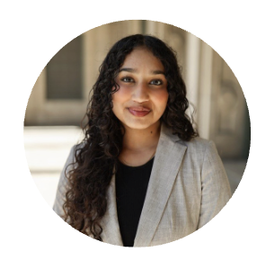
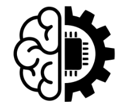
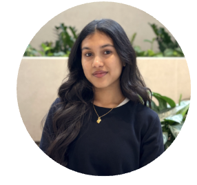

Monisha Suresh: Hi, I'm Monisha, a Junior attending UW-Madison! I am studying Psychology and Information Science, and I love learning about how digital interventions can help communities. I’m in the Sexual Violence research lab on campus, and am currently working on a project where we study what digital interventions have been developed or evaluated for survivors of recent sexual assault. Through this class, I want to continue exploring how we can help people through technology.
Ray Xue: Hello, I’m Ray! I’m a Senior at UW-Madison majoring in Econ and Information Science. I took this class because I wanted to better understand how technology can affect different groups of people. I found it really interesting that in the past, communities such as the Navajo women have helped develop technology, and didn’t receive proper credit for it. I want to continue exploring other groups who have faced this same treatment.

Vedika Natani: Hi, I’m Vedika, a Senior at UW-Madison! I am studying Data and Information Science, and I love seeing how Data and AI can solve healthcare issues. I’ve learned a lot about biases through this class, and understand that people of color tend to be affected a lot by disparities in technology. I’ve also found intersectionality to be a really interesting topic touched on in this class, because of my dual identity as a South Asian woman studying in America.